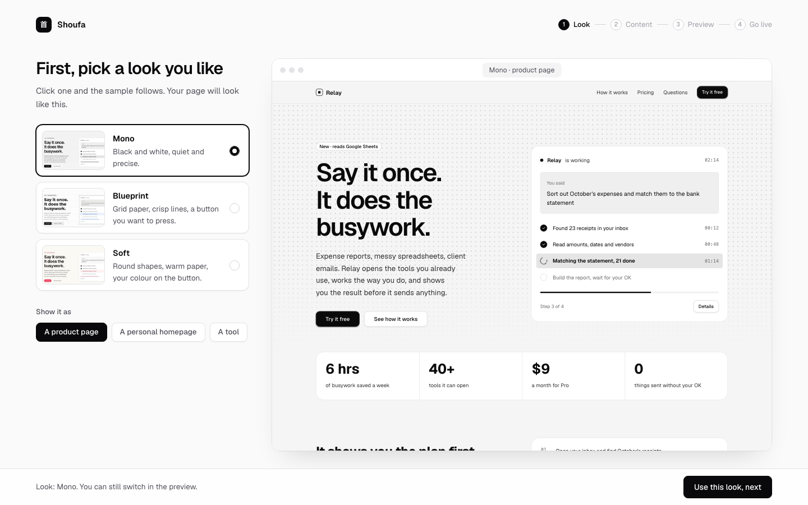
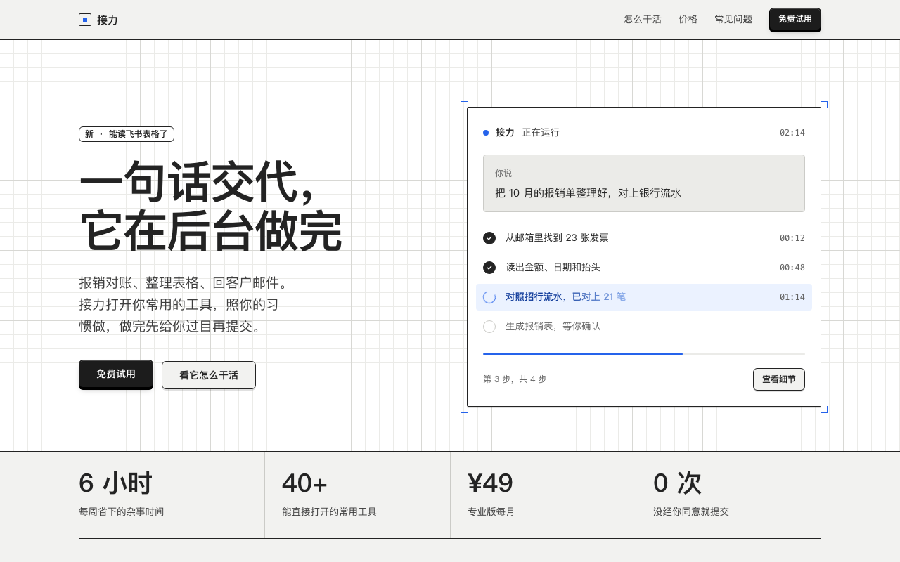
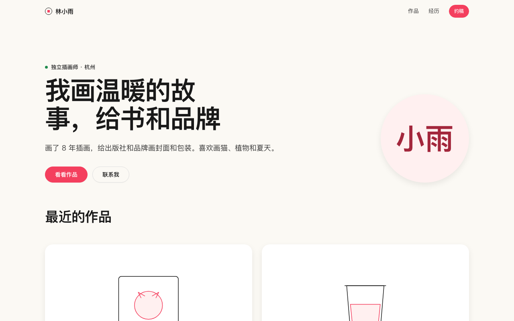
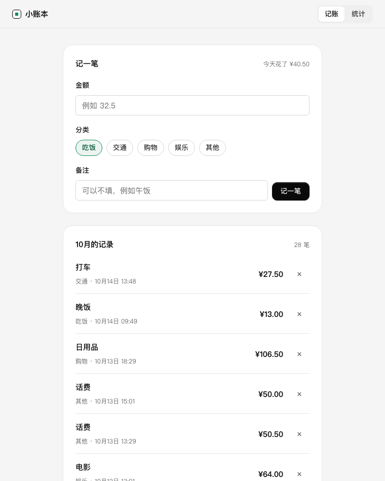
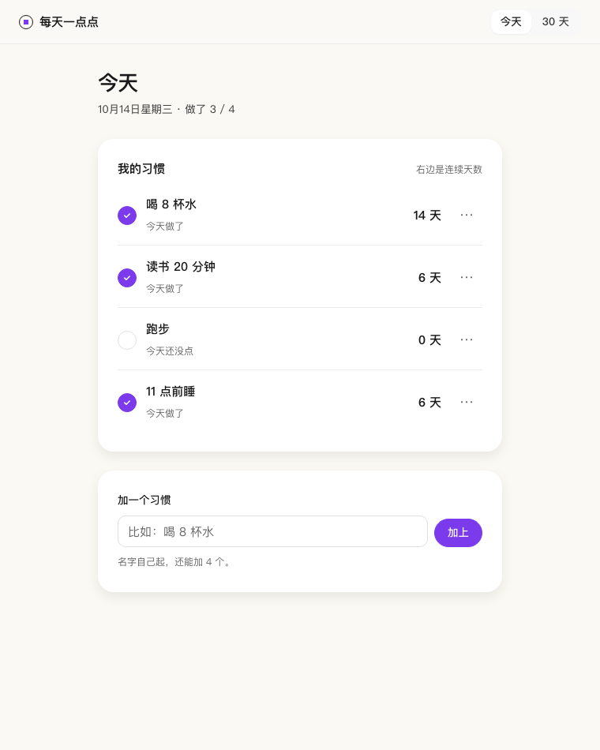
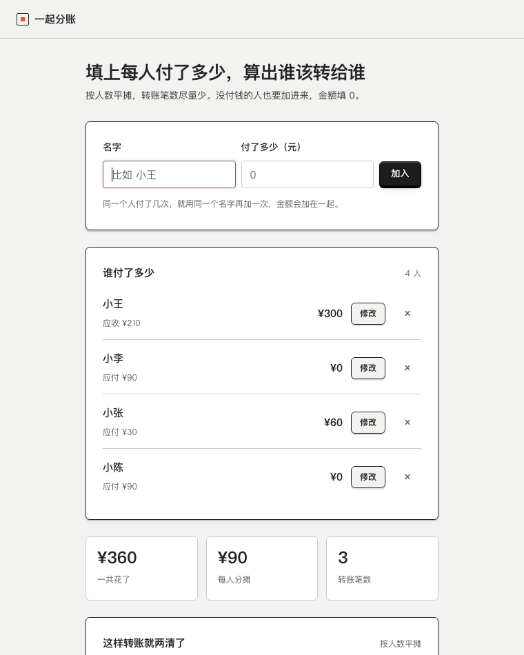
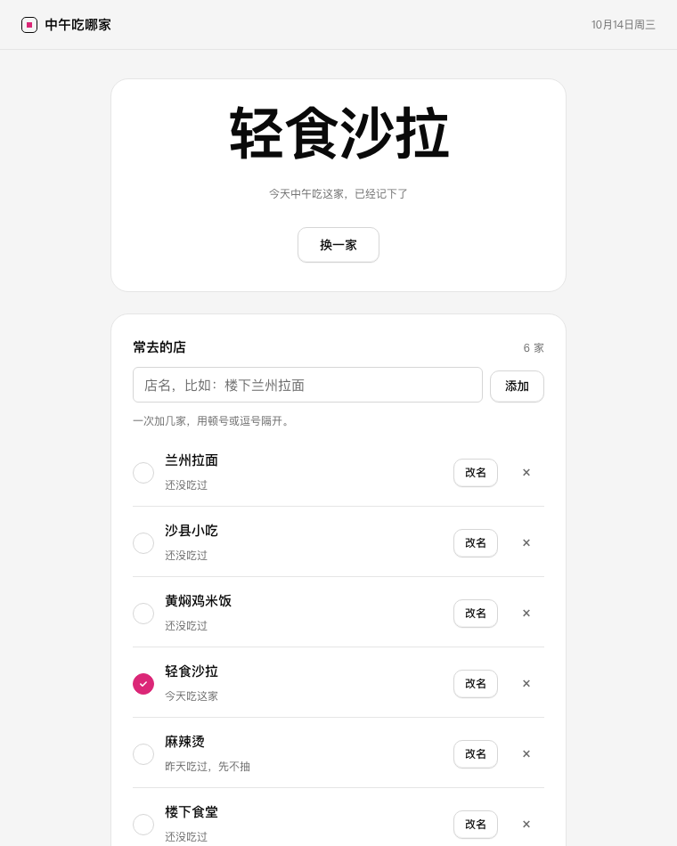

<style>
.shot { display: grid; gap: 12px; color: inherit; text-decoration: none; }
.shot figure { margin: 0; overflow: hidden; border: 1px solid var(--nt-line); border-radius: var(--nt-radius); background: var(--nt-surface); aspect-ratio: 16 / 10; }
.shot.is-tall figure { aspect-ratio: 4 / 5; }
.shot img { display: block; width: 100%; height: 100%; object-fit: cover; object-position: top center; transition: transform .3s var(--nt-ease); }
.shot:hover img { transform: scale(1.02); }
.shot h3 { margin: 0; font-size: 16px; line-height: 24px; }
.shot p { margin: 0; color: var(--nt-ink-2); font-size: var(--nt-text-sm); line-height: var(--nt-lh-sm); }
.shot span { color: var(--nt-ink-3); font-size: var(--nt-text-xs); }
.looks figure { margin: 0; display: grid; gap: 10px; }
.looks img { display: block; width: 100%; border: 1px solid var(--nt-line); border-radius: var(--nt-radius-sm); }
.looks figcaption { font-size: var(--nt-text-sm); color: var(--nt-ink-2); }
.looks figcaption b { color: var(--nt-ink); margin-right: 6px; }
.group-title { margin: var(--nt-7) 0 var(--nt-5); font-size: 18px; line-height: 26px; }
</style>
<header class="nt-topbar">
  <div class="nt-wrap nt-row">
    <a class="nt-brand" href="#" data-zh="首发">Shoufa</a>
    <span class="nt-grow"></span>
    <nav class="nt-nav" aria-label="Main">
      <a href="#made" data-zh="作品">Made with it</a>
      <a href="#how" data-zh="怎么用">How it works</a>
      <a href="#install" data-zh="安装">Install</a>
      <div class="nt-seg" role="group" aria-label="Language">
        <button data-lang="en" aria-pressed="true">EN</button>
        <button data-lang="zh" aria-pressed="false">中文</button>
      </div>
      <a class="nt-btn nt-btn--primary nt-btn--sm" href="https://github.com/kehaoran-ai/shoufa">GitHub</a>
    </nav>
  </div>
</header>
<main>
  <section class="nt-wrap nt-hero nt-split" style="align-items:center">
    <div>
      <span class="nt-tag" data-zh="开源 · MIT 许可">Open source · MIT</span>
      <h1 style="margin-top:20px" data-zh="不写代码，&lt;br&gt;做出第一个上线的产品">Your first product, live.<br>No code.</h1>
      <p class="nt-lede" data-zh="给 Claude Code 等 AI 编程工具用的 skill。在浏览器里点几个选择题，做出个人主页、产品落地页，或者一个能直接用的小工具，再免费放到网上。">A skill for Claude Code and other agents. Click through a short form in your browser, get a personal homepage, a product page or a small working tool, and put it online for free.</p>
      <div class="nt-actions" style="flex-wrap:wrap">
        <div class="nt-install"><span id="cmd-hero">npx skills add kehaoran-ai/shoufa</span><button class="nt-copy" data-copy="#cmd-hero" data-zh="复制">Copy</button></div>
        <a class="nt-btn nt-btn--lg" href="/try/" data-zh="试试表单">Try the form</a>
      </div>
    </div>
    <figure class="nt-figure" style="margin:0">
      <div class="nt-frame"></div>
    </figure>
  </section>

  <section class="nt-wrap nt-section" id="made">
    <div class="nt-section-head"><h2 data-zh="用首发做出来的">Made with Shoufa</h2><p data-zh="每一个都是 AI 只读了这个 skill、照着表单答案做出来的。点开就是成品，小工具可以直接用。">Each one was built by an agent with nothing but the skill and a set of form answers. Open any of them; the tools work.</p></div>

    <h3 class="group-title" data-zh="页面">Pages</h3>
    <div class="nt-cols" style="--cols:2">
      <a class="shot" href="examples/jieli/"><figure></figure><h3 data-zh="接力：AI agent 产品的落地页">Relay: an AI agent's product page</h3><p data-zh="线稿风格。首屏是一张正在执行任务的卡片。">Blueprint look, with a live task card in the hero.</p></a>
      <a class="shot" href="examples/xiaoyu/"><figure></figure><h3 data-zh="林小雨：插画师的个人主页">Lin Xiaoyu: an illustrator's homepage</h3><p data-zh="柔和风格。作品、经历和联系方式。">Soft look. Work, background and how to get in touch.</p></a>
    </div>

    <h3 class="group-title" data-zh="能直接用的小工具">Tools you can use</h3>
    <div class="nt-cols" style="--cols:4">
      <a class="shot is-tall" href="examples/ledger/"><figure></figure><h3 data-zh="小账本">Pocket ledger</h3><p data-zh="随手记一笔，看这个月花在哪。">Log a spend, see where the month went.</p></a>
      <a class="shot is-tall" href="examples/habits/"><figure></figure><h3 data-zh="每天一点点">Little every day</h3><p data-zh="习惯打卡、连续天数、30 天格子。">Habit ticks, streaks and a 30-day grid.</p></a>
      <a class="shot is-tall" href="examples/split-bill/"><figure></figure><h3 data-zh="一起分账">Split the bill</h3><p data-zh="谁付了多少，算出最少的转账。">Who paid what, settled in the fewest transfers.</p></a>
      <a class="shot is-tall" href="examples/lunch-picker/"><figure></figure><h3 data-zh="中午吃哪家">Where's lunch</h3><p data-zh="随机抽一家，跳过这两天吃过的。">Draws a place, skipping the last two days.</p></a>
    </div>
    <p class="nt-muted" style="margin-top:16px;font-size:var(--nt-text-sm)" data-zh="小工具的数据只存在你自己的浏览器里，截图里的记录是为了展示填的。">Tool data stays in your own browser. The records in the screenshots were added for display.</p>
  </section>

  <section class="nt-wrap nt-section" id="how" style="padding-top:0">
    <div class="nt-section-head"><h2 data-zh="五步，从想法到链接">Five steps from an idea to a link</h2><p data-zh="你只管点选。命令和文件都由 AI 处理。">You click choices. The agent handles every command and file.</p></div>
    <div class="nt-split" style="align-items:start">
      <ol class="nt-steps" style="margin:0">
        <li><h4 data-zh="先挑风格">Pick a look</h4><p data-zh="三种风格，旁边是用它做的完整示例，看着选。">Three looks, each shown as a full sample page next to the choices.</p></li>
        <li><h4 data-zh="选做什么和主色">Say what you're making</h4><p data-zh="个人主页、产品落地页、能用的小工具，或者用一句话说。">A homepage, a product page, a working tool, or one sentence of your own.</p></li>
        <li><h4 data-zh="补内容（可以跳过）">Add details, if you like</h4><p data-zh="名字、介绍、照片、作品、价格。填得越细越像你。">Name, story, photos, work, prices. The more you add, the more it is yours.</p></li>
        <li><h4 data-zh="预览">Preview</h4><p data-zh="随时换风格、换颜色、看手机效果，不满意就说要改哪里。">Switch look and colour, check the phone view, ask for changes.</p></li>
        <li><h4 data-zh="免费上线">Go live for free</h4><p data-zh="一步步带你开好 Cloudflare 账号，AI 上传，给你一个能分享的链接。">A guide through a free Cloudflare account; the agent uploads and hands you a link.</p></li>
      </ol>
      <div class="looks nt-cols" style="--cols:1;gap:20px">
        <figure><figcaption><b data-zh="素白">Mono</b><span data-zh="黑白两色、点阵、白面板">Black and white, a dot grid, white panels</span></figcaption></figure>
        <figure><figcaption><b data-zh="线稿">Blueprint</b><span data-zh="方格纸、墨线、有按键感的按钮">Grid paper, ink lines, a button you want to press</span></figcaption></figure>
        <figure><figcaption><b data-zh="柔和">Soft</b><span data-zh="暖白底、圆角、按钮用你的主色">Warm paper, round shapes, your colour on the button</span></figcaption></figure>
      </div>
    </div>
  </section>

  <section class="nt-wrap nt-section" id="install" style="padding-top:0">
    <div class="nt-section-head"><h2 data-zh="安装">Install</h2><p data-zh="需要 Python 3（Mac 自带）。上线那一步还需要 Node.js，没装的话指引页会告诉你怎么装。">You need Python 3 (already on a Mac). Going live also needs Node.js; the guide shows how to get it.</p></div>
    <div class="nt-split" style="align-items:start">
      <div class="nt-code"><div class="nt-code-head" data-zh="Claude Code">Claude Code<button class="nt-copy" data-copy="#c-cc" data-zh="复制">Copy</button></div><pre id="c-cc">/plugin marketplace add kehaoran-ai/shoufa
/plugin install shoufa@shoufa</pre></div>
      <div class="nt-code"><div class="nt-code-head" data-zh="其他支持 skill 的工具">Any agent that reads skills<button class="nt-copy" data-copy="#c-sk" data-zh="复制">Copy</button></div><pre id="c-sk">npx skills add kehaoran-ai/shoufa</pre></div>
    </div>
    <p style="margin-top:20px" data-zh="然后跟 AI 说一句：「我想给自己做个主页」，或者「帮我做个记账的小工具」。">Then tell your agent: "I want to make a homepage for myself", or "make me a little budgeting tool".</p>
  </section>

  <section class="nt-wrap nt-section" id="faq" style="padding-top:0">
    <div class="nt-section-head"><h2 data-zh="常见问题">Questions</h2></div>
    <div class="nt-faq" style="max-width:780px">
      <details open><summary data-zh="要花钱吗？">Does it cost anything?</summary><div data-zh="不用。skill 免费开源，Cloudflare 免费托管小网站。">No. The skill is free and open source, and Cloudflare hosts small sites for free.</div></details>
      <details><summary data-zh="会让我输密码吗？">Will it ask for my passwords?</summary><div data-zh="不会。Cloudflare 会在它自己的页面上问你，能不能让这台电脑帮你发布。AI 碰不到你的密码。">No. Cloudflare asks you on its own page whether this computer may publish for you. The agent never sees your password.</div></details>
      <details><summary data-zh="以后还能改吗？">Can I change it later?</summary><div data-zh="能。跟 AI 说要改哪里，它改好再发一次。">Yes. Tell your agent what to change; it edits and publishes again.</div></details>
      <details><summary data-zh="能用自己的域名吗？">Can I use my own domain?</summary><div data-zh="能，上线后在 Cloudflare 后台加上就行。">Yes, add it in the Cloudflare dashboard once the page is live.</div></details>
    </div>
  </section>

  <section class="nt-wrap" id="start"><div class="nt-cta">
    <div><h2 data-zh="先点一遍表单，看看会做出什么">Click through the form and see what you'd get</h2><p class="nt-muted" style="margin:12px 0 0" data-zh="演示版不连 AI，风格和颜色可以随便换。">The demo has no agent behind it, but every look and colour switch works.</p></div>
    <a class="nt-btn nt-btn--primary nt-btn--lg" href="/try/" data-zh="打开表单">Open the form</a>
  </div></section>
</main>
<footer class="nt-footer"><div class="nt-wrap nt-row"><span data-zh="首发 · MIT · 柯浩然">Shoufa · MIT · Ke Haoran</span><span class="nt-grow"></span><a href="https://github.com/kehaoran-ai/shoufa">GitHub</a><a href="https://neatly.kehaoran.ai" data-zh="Neatly 排版引擎">Built on Neatly</a></div></footer>
<script>
/* Language: English or Chinese. Chinese browsers start in Chinese; the choice is remembered. */
(function () {
  var nodes = [].slice.call(document.querySelectorAll("[data-zh]"));
  nodes.forEach(function (n) { n.dataset.en = n.innerHTML; });
  var imgs = [].slice.call(document.querySelectorAll("img[data-zh-src]"));
  imgs.forEach(function (i) { i.dataset.enSrc = i.getAttribute("src"); });
  var langButtons = [].slice.call(document.querySelectorAll("[data-lang]"));
  var links = [].slice.call(document.querySelectorAll('a[href="/try/"]'));
  var titles = { en: document.title, zh: "首发：不写代码，做出第一个上线的产品" };
  function setLang(lang, remember) {
    nodes.forEach(function (n) { n.innerHTML = lang === "zh" ? n.dataset.zh : n.dataset.en; });
    imgs.forEach(function (i) { i.src = lang === "zh" ? i.dataset.zhSrc : i.dataset.enSrc; });
    links.forEach(function (a) { a.href = "/try/?lang=" + lang; });
    document.documentElement.lang = lang === "zh" ? "zh-CN" : "en";
    document.title = titles[lang];
    langButtons.forEach(function (b) { b.setAttribute("aria-pressed", b.dataset.lang === lang ? "true" : "false"); });
    if (remember) { try { localStorage.setItem("shoufa-lang", lang); } catch (e) {} }
  }
  langButtons.forEach(function (b) { b.addEventListener("click", function () { setLang(b.dataset.lang, true); }); });
  var saved = null;
  try { saved = localStorage.getItem("shoufa-lang"); } catch (e) {}
  var q = new URLSearchParams(location.search).get("lang");
  var start = q || saved || ((navigator.language || "").toLowerCase().indexOf("zh") === 0 ? "zh" : "en");
  setLang(start === "zh" ? "zh" : "en", false);
})();
</script>
